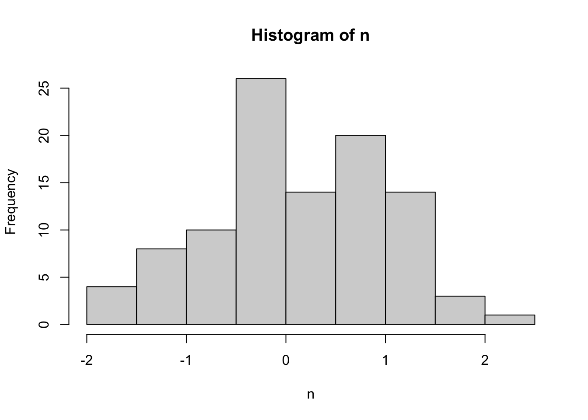

Chapter 9 Regression-discontinuity
Regression discontinuityに基づく推定方法を紹介
Chapter 9.1 : Regression discontinuityにおける問題意識を紹介
Chapter 9.3 : Sharp designに基づく推定方法を紹介
9.1 問題意識
識別の仮定：ある変数\(X\)について、以下の条件を満たすcutoff \(c\)が存在する
- \(\lim_{x\uparrow c}\Pr[D_i=d|X=x]\neq \lim_{x\downarrow c}\Pr[D_i=d|X=x]\): 原因変数の分布がcutoffの前後で非連続的に変化している
通常、Cutoffの近傍には少数のサンプルしかないので、外挿する必要がある。
Local polynomial regressionによる局所的外挿は、rdrobustパッケージ (Calonico et al. 2021)により実装できる。
同パッケージによる実装も含んだ包括的な入門は Cattaneo, Idrobo, and Titiunik (2019b), Cattaneo, Idrobo, and Titiunik (2019a).
9.2 パッケージ & データ
Rdrobustに同梱されれいるExample data (Cattaneo, Frandsen, and Titiunik 2015)を使用
選挙における現職効果（現在議席を得ている候補者のほうが選挙で有利になる）を推定
running variable \(=\) margin (前回の選挙におけるライバル政党との得票率差)
cutoff \(=\) 0 (差がない)
outcome variable \(=\) vote (選挙における得票率)
library(rdrobust)
library(tidyverse)
data("rdrobust_RDsenate")
raw <- rdrobust_RDsenate9.3 Shap disconiniuity
- 推計前に\(X\)と\(Y\)についての散布図を確認することを推奨
raw |>
ggplot(aes(x = margin,
y = vote)
) +
geom_point() +
geom_vline(xintercept = 0)
- 初期設定では2nd oder local polynominalを利用 (Gelman and Imbens (2019) の推奨)
Y <- raw$vote
X <- raw$margin
rdplot(y = Y,
x = X)
- 推定結果表 + 標準誤差
rdrobust(y = Y,
x = X) |>
summary()## Call: rdrobust
##
## Number of Obs. 1297
## BW type mserd
## Kernel Triangular
## VCE method NN
##
## Number of Obs. 595 702
## Eff. Number of Obs. 360 323
## Order est. (p) 1 1
## Order bias (q) 2 2
## BW est. (h) 17.754 17.754
## BW bias (b) 28.028 28.028
## rho (h/b) 0.633 0.633
## Unique Obs. 595 665
##
## =============================================================================
## Method Coef. Std. Err. z P>|z| [ 95% C.I. ]
## =============================================================================
## Conventional 7.414 1.459 5.083 0.000 [4.555 , 10.273]
## Robust - - 4.311 0.000 [4.094 , 10.919]
## =============================================================================References
Calonico, Sebastian, Matias D. Cattaneo, Max H. Farrell, and Rocio Titiunik. 2021. Rdrobust: Robust Data-Driven Statistical Inference in Regression-Discontinuity Designs. https://CRAN.R-project.org/package=rdrobust.
Cattaneo, Matias D, Brigham R Frandsen, and Rocio Titiunik. 2015. “Randomization Inference in the Regression Discontinuity Design: An Application to Party Advantages in the US Senate.” Journal of Causal Inference 3 (1): 1–24.
Cattaneo, Matias D, Nicolás Idrobo, and Rocı́o Titiunik. 2019a. A Practical Introduction to Regression Discontinuity Designs: Extensions. Cambridge University Press.
———. 2019b. A Practical Introduction to Regression Discontinuity Designs: Foundations. Cambridge University Press.
Gelman, Andrew, and Guido Imbens. 2019. “Why High-Order Polynominals Should Not Be Used in Regression Discontinuity Designs.” Journal of Business and Econmomic Statistics 37 (3): 447–56.